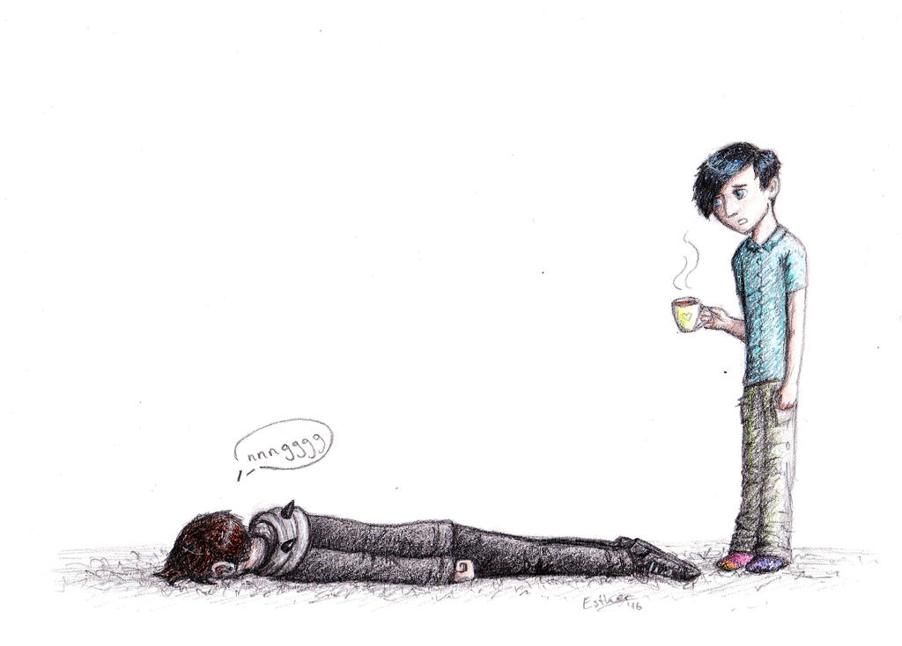

Existential Crisis Norms
Existential crises are inner conflicts characterized by the impression that life lacks meaning and confusion
about one's
personal identity. They are accompanied by anxiety and stress, often to such a degree that they disturb
one's normal
functioning in everyday life and lead to depression. Their negative attitude towards meaning reflects
characteristics of
the philosophical movement of existentialism.

The components of existential crises can be divided
into emotional,
cognitive, and behavioral aspects. Emotional components refer to the feelings, such as emotional pain,
despair,
helplessness, guilt, anxiety, or loneliness. Cognitive components encompass the problem of meaninglessness,
the loss of
personal values or spiritual faith, and thinking about death. Behavioral components include addictions, and
anti-social
and compulsive behavior.
Existential crises may occur at different stages in life: the teenage crisis, the quarter-life crisis, the
mid-life
crisis, and the later-life crisis. Earlier crises tend to be forward-looking: the individual is anxious and
confused
about which path in life to follow regarding education, career, personal identity, and social relationships.
Later
crises tend to be backward-looking. Often triggered by the impression that one is past one's peak in life,
they are
usually characterized by guilt, regret, and a fear of death. If an earlier existential crisis was properly
resolved, it
is easier for the individual to resolve or avoid later crises. Not everyone experiences existential crises
in their
life.
The problem of meaninglessness plays a central role in all of these types. It can arise in the form of
cosmic meaning,
which is concerned with the meaning of life at large or why we are here. Another form concerns personal
secular meaning,
in which the individual tries to discover purpose and value mainly for their own life. Finding a source of
meaning may
resolve a crisis, like altruism, dedicating oneself to a religious or political cause, or finding a way to
develop one's
potential. Other approaches include adopting a new system of meaning, learning to accept meaninglessness,
cognitive
behavioral therapy, and the practice of social perspective-taking.
Negative consequences of existential crisis include anxiety and bad relationships on the personal level as
well as a
high divorce rate and decreased productivity on the social level. Some questionnaires, such as the Purpose
in Life Test,
measure whether someone is currently undergoing an existential crisis. Outside its main use in psychology
and
psychotherapy, the term "existential crisis" refers to a threat to the existence of something.
Existential crises are often seen as a phenomenon associated specifically with modern society. One important
factor in
this context is that various sources of meaning, such as religion or being grounded in one's local culture
and immediate
social environment, are less important in the contemporary context.
Another factor in modern society is that individuals are faced with a daunting number of decisions to make
and
alternatives to choose from, often without any clear guidelines on how to make these choices.The high
difficulty
for finding the best alternative and the importance of doing so are often the cause of anxiety and may lead
to an
existential crisis.
For example, it was very common for a long time in history for a son to simply
follow
his
father's profession. In contrast to this, the modern schooling system presents students with different areas
of study
and interest, thereby opening a wide range of career opportunities to them. The problem brought about by
this increased
freedom is sometimes referred to as the agony of choice.The increased difficulty is described in Barry
Schwartz's
law, which links the costs, time, and energy needed to make a well-informed choice to the number of
alternatives
available.
